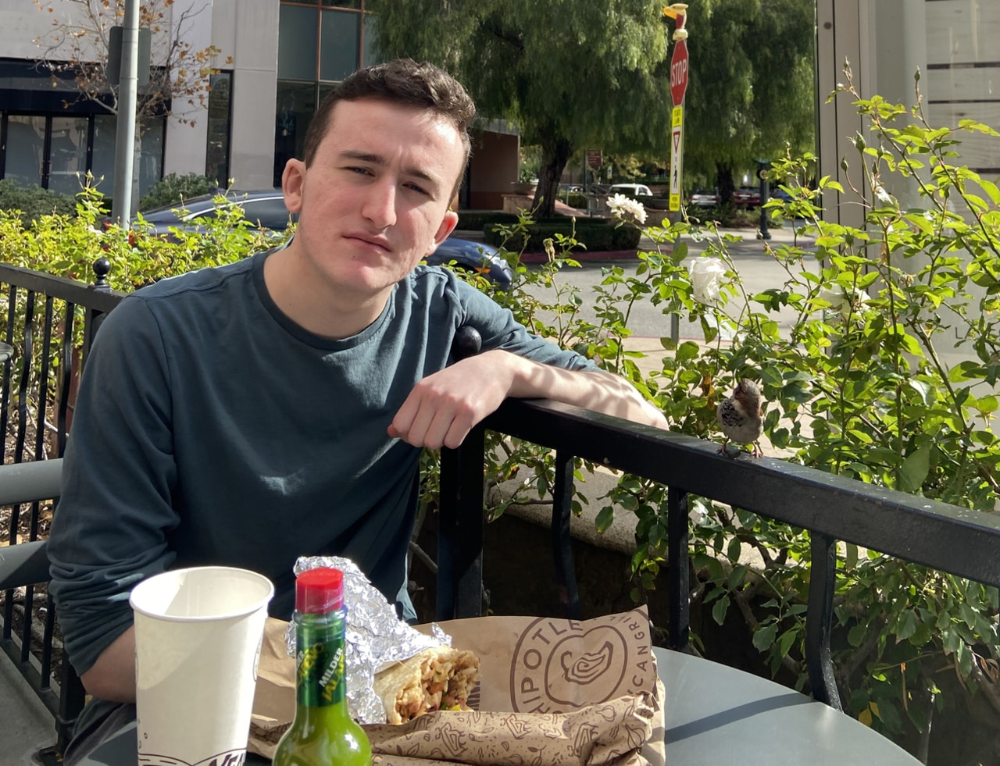

This bird landed right next to me, so I thought it would make a funny picture.
Hi! I'm Tyler Lentz—a second-year student currently studying Computer Science at the UC San Diego Jacob's School of Engineering.
In my freshman year, I joined the software team of Triton UAS, a student-led engineering project team where
we construct an autonomous airplane to compete in the international AUVSI SUAS competition.
Currently, I am one of two co-leads in charge of the software team. To read more about my work in Triton UAS, please visit the
projects page. I am currently set to graduate in , and am
still deciding on what part of Computer Science interests me the most.
The finish of my fastest ever 1600m race (4:35) at the APU Meet of Champions. I am the one in the darker blue uniform.
Outside of Computer Science, I have a number of hobbies. In high school, I joined my team's Cross Country and Track and Field teams. Through these
programs, I developed a love for long distance running. Back then, it wasn't uncommon for us to run close to half marathons on our long days, and
we rarely dipped below 50 miles per week on the Varsity team. Nowadays I don't get out to run nearly as much, but I still enjoy the sport
and wish to get back in shape once I have more free time. In addition to running, I've always enjoyed playing video games. Currently, I play a lot
of Valorant and Risk of Rain 2 with my friends, but it would take many pages to talk about every single game I've gotten into and played. I also
watch a good amount of TV, and enjoy anime and manga like Attack on Titan and Demon Slayer.